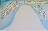
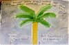

Missing Home
Nostalgia and Christmas seem an indissoluble pair of lovers. Where there isn’t snow or Christmas trees, a heap of friends nor family there is the thought that these are owed by some foreignly implanted childhood right. I’ve been homesick this year, perhaps for the first time ever. I’ve wanted snow and Christmas trees and to be surrounded by my family; I haven’t been there at this time of year for seven years! In what we get, it makes no difference what we are thought to be owed.
{kind=link}
In lieu of myself I send the annual “do-it-yourself” card. In years of more feistiness I try to make them as eccentric as possible, perhaps standing as my black-sheep excuse for not being “home.” In years of more nostalgia I send them like I wish to be, sitting there, talking, listening. In hopes that my family doesn’t read this site before the illustrated paper arrives, my creations this year are here:
{kind=link}
{kind=link}
{kind=link}
I like the stories and the watercolors, though flat and unskilled, are as equally descriptive of a feeling. My aim was to describe the smallness of all of us, which was just how I felt.
Last night, talking to Rafael Farratell, my mom’s Spanish husband, he told me that he has become the Holy Spirit. He said he thought the Holy Spirit was a much better deal than either Jesus or God, who were always pandering to so many demands; he wants less responsibility, to move in and out of people at will, effecting them but going unnoticed. He also declared himself as the Mambo King, who just dances his little dance. Him and my mom live with my grandma, who, of extreme Christian beliefs epitomizes perfect Biblical duality. She enjoys calling amorously active people Fuckers. Sitting besides her I can almost see the battle between what is black and dark in her making its attempts to consume what she believes to be “good.” It is during the conversations that the three have at night, over champagne and “whiky,” that has driven Rafael to become the Holy Spirit and the Mambo King in one go.
I think of John Cowper Powys and his epic romances; about how he made the characters of his life into the characters in his books, whether they agreed or not. I’m missing out on great stories, as Rafael himself can attest. He says he looks around and listens to everyone and their solemn tales of woe and wonders, “Has it come to this?” Maybe I’ve made a mistake going away from the best “dramatic material” I could never find, but when I do go, Oh! the stories I’ll hear.
{kind=link}
But going home is more than the stories and the helpless nostalgia. I don’t know. I’m looking forward to it… maybe in February.
· · · · · · · · · · · · · · · · · · · ·